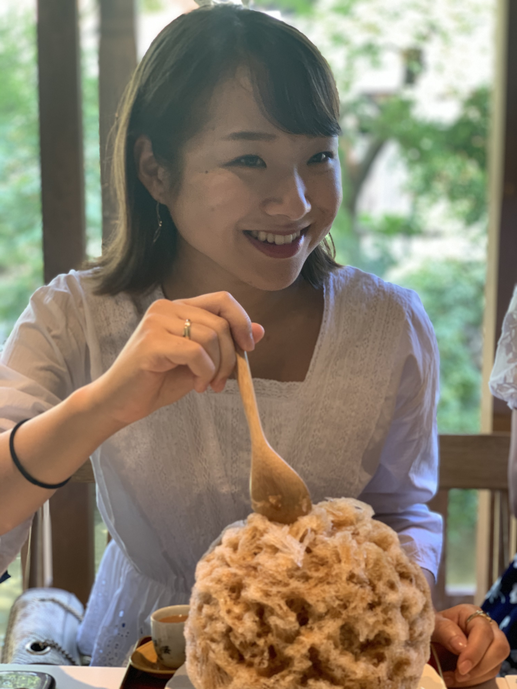

・Name : 橋本 茉奈（まなちゃ）
・University ： 京都大学 経済学部
・Date of Birth ： 2000/12/20
・Leadersのコース ： Movie Editing Course
・My hometown ： 神奈川県
・My pet ： めちゃくちゃ可愛いトイプードル
高校生の時カナダに三年間住んでいました！
中学・高校で軟式テニス、大学で硬式テニスをしています！
休みの日は映画三昧！
洋画をよく見ます
Most recommended movie
一人暮らしを始めてから自炊を頑張っています
Cookingram
研修を通して技術力・メンター力を高めることはもちろん、みんなとの関係を深めていきたいです！よろしくお願いします！